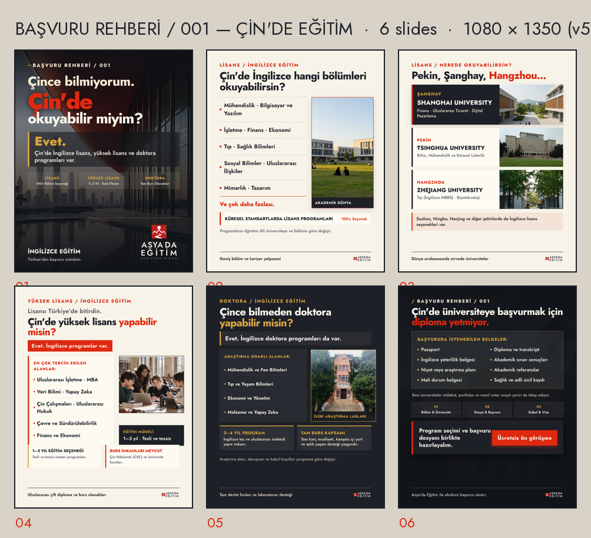
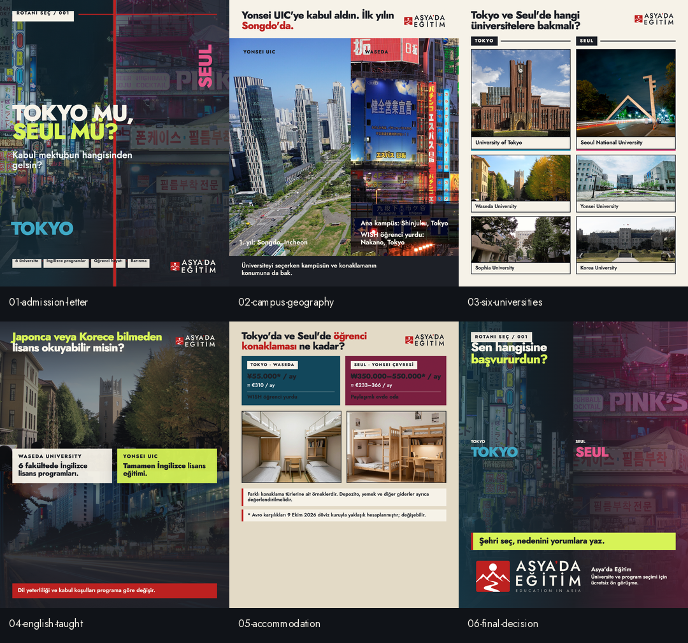
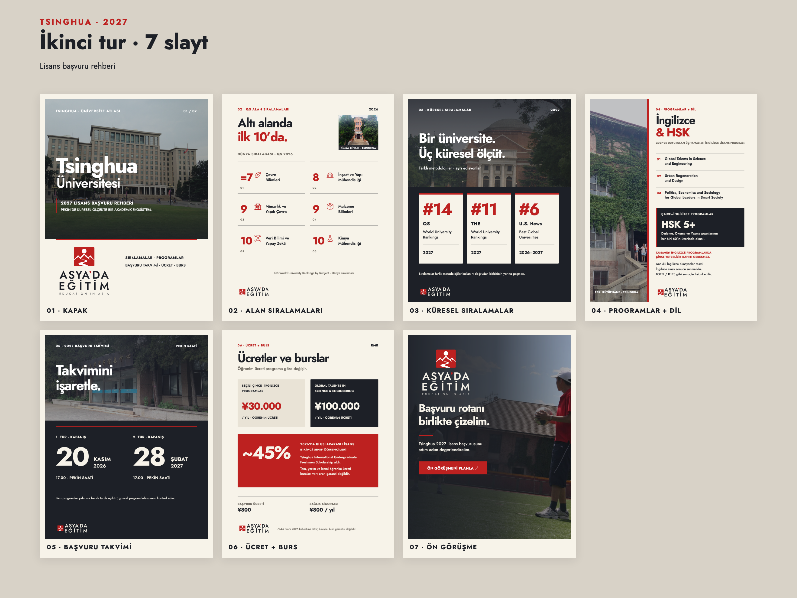
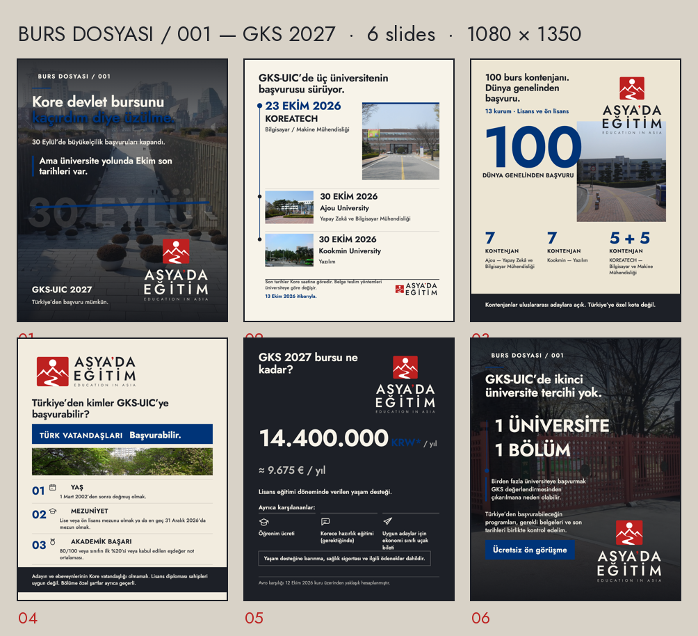

İki marka.
Tek stüdyo.
Onaylı kimlikler ve güncel tasarımlar burada. Geçmiş denemeler arşivde korunuyor; üretimler henüz onaylanmış içerik sayılmıyor.
01 / Markalar
Marka alanları
02 / Güncel üretimler
Tüm üretimleri gör ↗Son çalışmalar
İnceleme için hazırlanmış gerçek çalışma galerileri.

Asya'da Eğitim · KaruselÇince bilmeden Çin'de eğitimBaşvuru Rehberi · 6 slaytİncelemede
Asya'da Eğitim · KaruselTokyo mu, Seul mü?Rotanı Seç · 6 slaytİncelemede
Asya'da Eğitim · KaruselTsinghua Üniversitesi AtlasıÜniversite tanıtımı · 7 slaytİncelemede
Asya'da Eğitim · KaruselGKS 2027 Burs DosyasıBurs serisi · 6 slaytOnay bekliyor